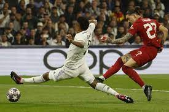

Atravez De Los Años

Cuando yo era niño yo era super bajito media 1.50m, tambien era muy canson molestaba mucho a mi hermanito le pegaba y le quitaba los juguetes, lo que mas le solia gustar a la gente usealmente era mi pelo crespo y grande (desgraciadamente no encontyre ninguna foto :( ) pero fuera de eso era y soy muy unido a mi familia y a mis amigos, yo estaba en Colombia un pais muy hermoso y lleno de naturaleza preciosa.
Antes cuando era bajito y tenia el pelo crespo, cabe aclarar que en esa foto estaba disfrazado de policia
Ahora soy alto (Dentro de lo que cabe) mido 1.70m que para mi edad 14 anos esta bien, mi pelo ya no es tan grande como antes pero me gusta mas, ahora soy mas responsable y maduro, ya no molesto casi a hermano.
De nino jugaba mucho al futbol era defensa y tenia un nivel decente, yo jugue en Millonarios F.C. y tambien sabia programar pero era muy principiante
Ahora de grande me sigue gustando el futbol y sigo con el tema de programacion, ultimamente me he interesado mas en el tema y logro crear cosas bonitas como el sitio que la senora Martinez esta leyendo ahora siento que cada vez soy mejor y lograre cosas grandes.

Mi primaria era muy grande teniamos multiples campos de futbol 5 y unos cuantos de baloncesto, mi colegio quedaba en colombia, en esa escuela tengo muchisimos recuerdos con mis amigos, amigas 😉, y todo.
En colombia veiamos 13 materias y empezabamos las clases a las 6:40 am y terminabamos las clases a las 3 o a las 4 en punto. extraño mucho el colegio pero aca tambien me gusta.

Ahora mi colegio queda en EEUU (Estados Unidos), estudio en la preparatoria Santa Teresa y es muy grande y creo que la educacion es muy buena, ya no tengop tantas clases como antes pero ahora las clases son un poco mas dificiles y me tengo que esforzar mas. Ahora em0.piezo a estudiar a las 8:30 y termino de estudiar los Martes y Jueves a las 2:20 y los Miercoles y Viernes termino a las 3:00. Me estoy esforzando mucho para poder ir al MIT y poder cumplir mi sueño.